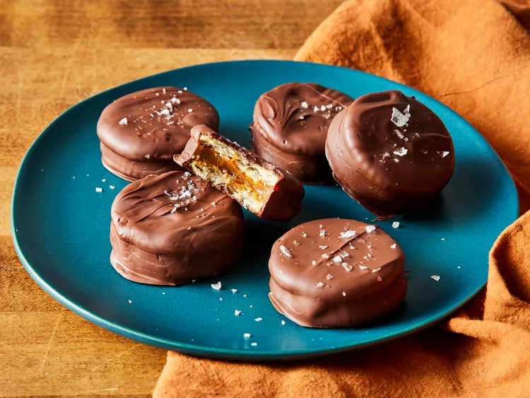

Salted Caramel Ritz Cookies

Description
Ritz cookies are the base for these no bake salted caramel ritz cookies. The sweetness of dulce de leche and chocolate provide a wonderful contrast to the salty, buttery crackers.
Ingredients (for 1 serving)
- 60 round buttery crackers
- 1 cup canned dulce de leche
- 1 1/2 cups dark chocolate chips
- 1 1/2 cups dark chocolate melting wafers
- flaky sea salt (optional)
Steps
- Gather all ingredients.
- Arrange half of the crackers, bottom sides up, on a parchment-lined baking sheet.
- Spoon a rounded teaspoon of dulce de leche on the center of each cracker.
- Top with remaining crackers, top sides up. Place baking sheet in the refrigerator and chill for at least 30 minutes.
- In the top of a double boiler melt chocolate chips and melting wafers over medium, stirring occasionally, until smooth.
- Using a fork, dip cracker sandwiches into chocolate, allowing excess to drip back into the bowl.
- Return sandwiches to prepared baking sheet. If desired, sprinkle lightly with flaky sea salt.
- Chill sandwiches for 15 minutes or until chocolate is set. Store cookies in the refrigerator.